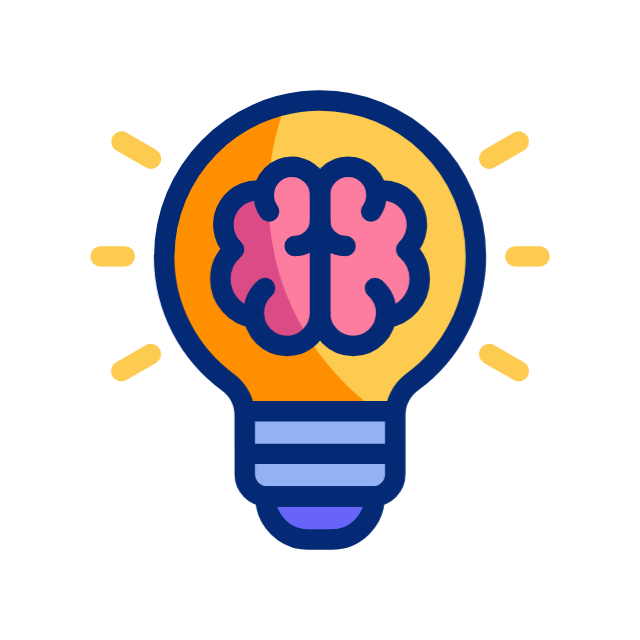

Finding Inspiration
The satisfaction of discovering new things.
Learning something new helps keep the brain active. It also builds confidence. Finding new forms of inspiration whether through visual art, music, or movies keeps the imagination active.